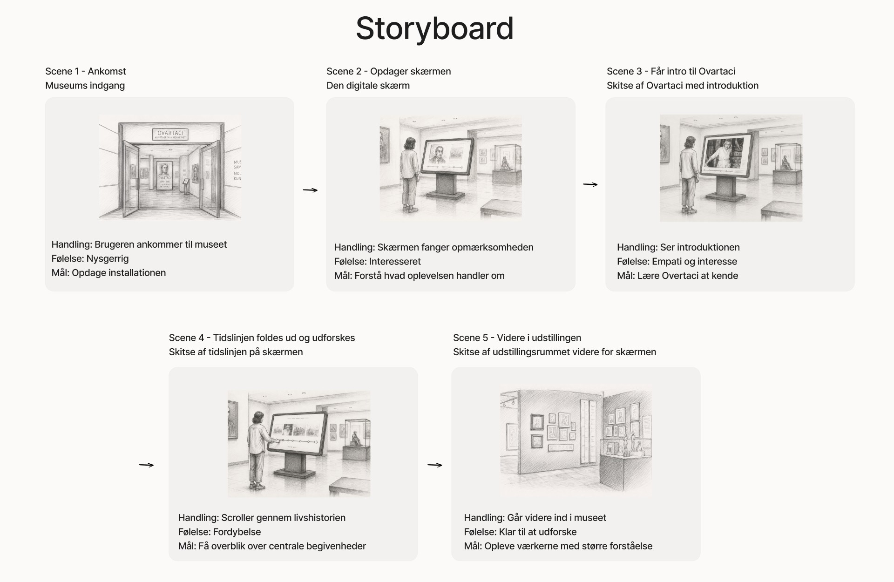
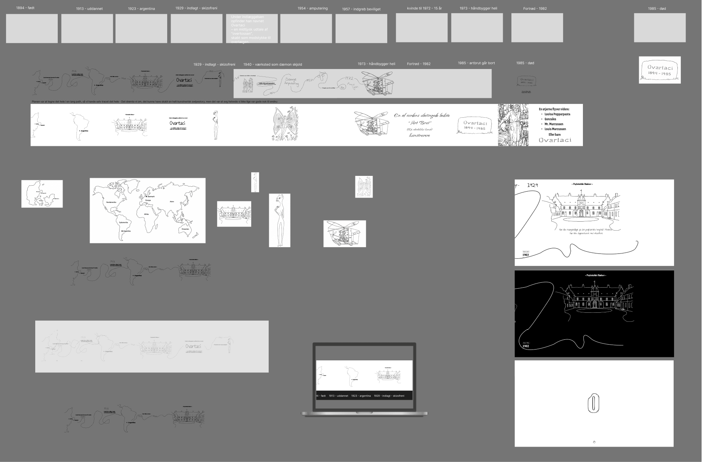

MUSEUM OVARTACI
En interaktiv digital oplevelse, der gør Ovartacis historie mere levende og engagerende gennem storytelling, illustrationer og animation.
PROJEKTBESKRIVELSE
Museum Ovartaci formidler historien om Ovartaci gennem kunst og personlige fortællinger om blandt andet identitet, isolation og psykisk sygdom. I projektet undersøgte vi, hvordan museets fortælling kunne gøres mere engagerende for yngre besøgende gennem en digital og interaktiv oplevelse.
Vores research viste, at yngre besøgende i højere grad reagerede på visuelle elementer og bevægede sig hurtigere gennem teksttunge dele af udstillingen. Resultatet blev SwipeStories – en digital tidslinje, der guider brugeren gennem Ovartacis liv ved hjælp af storytelling, illustrationer, animationer og et intuitivt scroll-baseret flow.
PROCES
Projektet tog udgangspunkt i Double Diamond-modellen, hvor vi arbejdede fra research og brugerindsigter til idéudvikling, prototype og test. Gennem observationer og interviews opdagede vi, at yngre besøgende især blev fanget af visuelle elementer frem for lange tekster.
På baggrund af vores research udviklede vi konceptet SwipeStories – en interaktiv tidslinje, hvor storytelling, illustrationer og animationer formidler Ovartacis liv på en mere levende og engagerende måde.
Undervejs arbejdede vi iterativt med wireframes, storyboard, user flows og brugertests, som blev brugt til løbende at forbedre oplevelsen.
VÆRKTØJER

